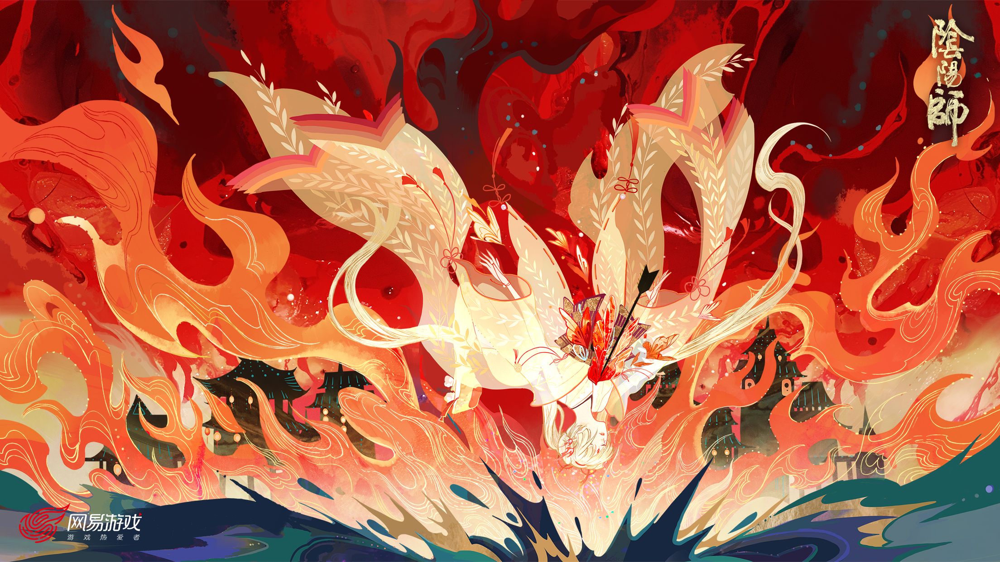
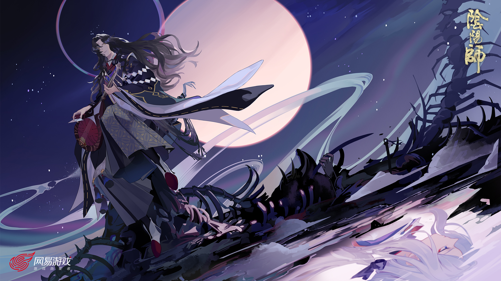
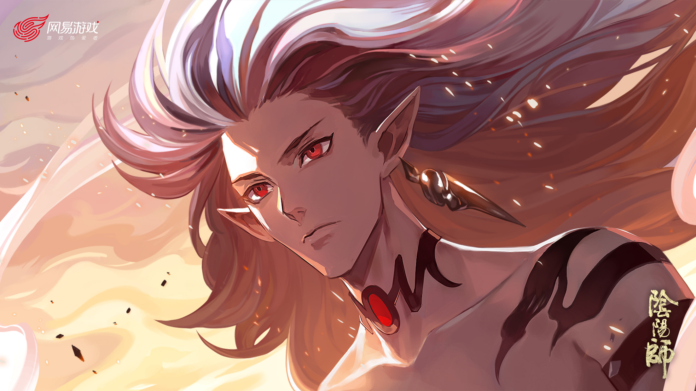
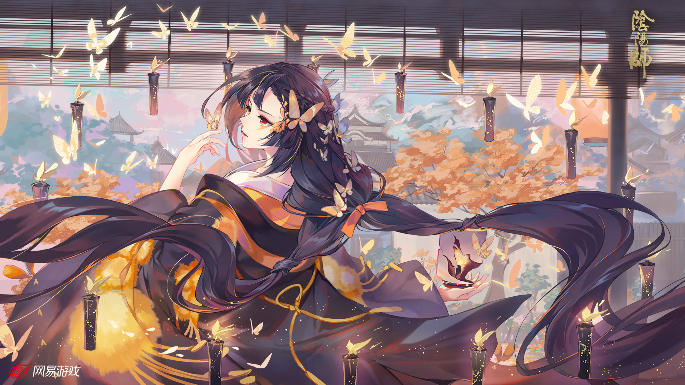

不知火
原本黑寂的海面上，突然出现了一束火光。火光分裂，滋生，最终成百上千，沿着海面直达天际。这便是大妖怪不知火的传说，它深深地烙印在每一个杏原人的脑海里。 每过数十年，不知火便会降临在杏原的海面，带来福祉抑或灾难。
不过，传说归传说，真正见过不知火的人，却是寥寥无几。
而我，却被赋予了这个神秘又不祥的名字。

鬼切
唔 ~ ~ 唔啊 ~ ~ 咳咳咳 ~ ~ 我从血泊里爬起。刚才真是一场恶战 ！ 我本抱着赴死的心去决斗 ~ 没想到我竟然活了下来 ！
我的手到现在还在发抖，无法握住掉在地上的刀。 不是因为恐惧，而是难以平息的恨意 ！ 但是，那个人类的尸体 ~ ~ 去哪里了呢 ？
这时，我看到那只掉落在地上的鬼手——茨木童子的鬼手，竟然握住了我的刀 ！

鬼王酒吞童子
我脱下僧袍，用妖力点燃，刹那间妖火冲天，方圆百里的人鬼都被妖气吸引，千百之军向我冲来。我大笑起来，来得正好，就让这征战之地成为我的领土与王座，我会用力量让所有人臣服。
从此这丹波山上再无神佛，本大爷将会统帅万鬼 ！

彼岸花
呵呵，人类总是把誓言和承诺挂在嘴边。如果你真的如你所起誓的那样，那就先和我一起下黄泉吧。不，我不是开玩笑，我是认真的哦。我有说过自己是人类吗，看来你是误会了什么呢 ~ ~
我住在黄泉的河岸，那里有一片彼岸花海。从春天到夏天，从秋天到冬天，四季盛开的花朵，就像火焰一样，染红了整个河川。
那可真是十分壮观的景象呢 ~ ~ 不过人们只有在死后，才能看到这盛况了。